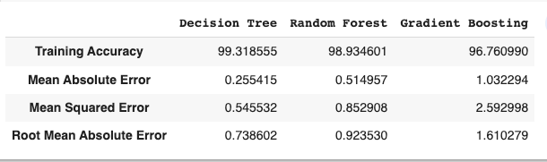
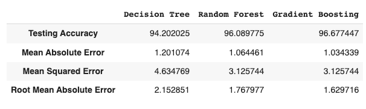

Results
Training Result
Testing Result
Conclusion
Before working on features first we need to know about the data insights which we get to know by EDA. Apart from that, we visualize the data by drawing various plots, due to which we understand that we don’t have any data for taxi’s price, also the price variations of other cabs and different types of weather. Other value count plots show the type and amount of data the dataset has. After this, we convert all categorical values into continuous data type and fill price Nan by the median of other values. Then the most important part of feature selection came which was done with the help of recursive feature elimination.
We apply four different models on our remaining dataset among which Decision Tree, Random Forest, and Gradient Boosting Regressor prove best with 96%+- accuracy on training for our model. This means the predictive power of all these three algorithms in this dataset with the chosen features is very high but in the end, we go with random forest because it does not prone to overfitting.